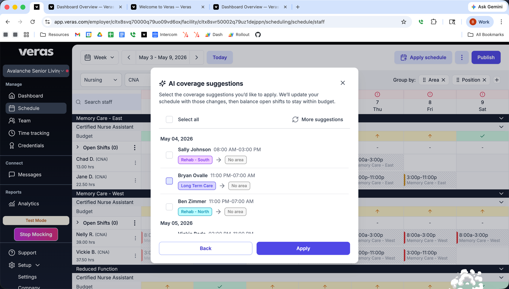

Open shifts going unfilled, positions running over budget, staff who could cover a gap — surfaced automatically, with a suggested action attached. You review, click Apply, and move on.
Open shifts going unfilled, positions over budget, staff who could cover a gap — surfaced automatically from your Dashboard with a suggested action already attached. You review, click Apply, and move on. No math, no guesswork.
